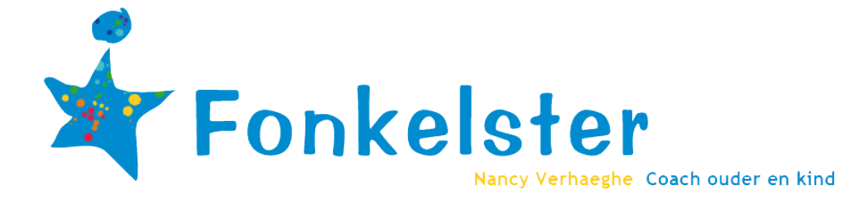

<mat-sidenav-container
  class="sidenav-container"
  style="background-color: white;"
>
  <mat-sidenav
    #drawer
    class="sidenav"
    fixedInViewport="true"
    [attr.role]="(isHandset$ | async) ? 'dialog' : 'navigation'"
    [mode]="(isHandset$ | async) ? 'over' : 'side'"
    [opened]="false"
    position="end"
  >
    <mat-nav-list>
      <a [routerLink]="['register']" class="navButton">Log in</a>
      <a href="#" class="navButton">Pagina 1</a>
      <a href="#" class="navButton">Pagina 2</a>
      <a href="#" class="navButton">Pagina 3</a>
      <a href="#" class="navButton">Pagina 4</a>
    </mat-nav-list>
  </mat-sidenav>
  <mat-sidenav-content>
    <mat-toolbar class="navToolbar">
      <a [routerLink]="['home']">
        
      </a>
      <div *ngIf="!(isHandset$ | async)" class="navRight">
        <a href="#" class="navButton">Pagina 1</a>
        <a href="#" class="navButton">Pagina 2</a>
        <a href="#" class="navButton">Pagina 3</a>
        <a href="#" class="navButton">Pagina 4</a>
        <a [routerLink]="['register']" class="navButton" *ngIf="user === null"
          >Log in</a
        >
        <!-- <mat-expansion-panel style="display: inline-block;" *ngIf="user !== null">
          <mat-expansion-panel-header>
            <mat-panel-title>
              Account
            </mat-panel-title>
          </mat-expansion-panel-header>
          <a [routerLink]="['account']" class="navButton" *ngIf="user !== null"
            >Wijzig gegevens</a
          >
        </mat-expansion-panel> -->
        <div ngDropdown *ngIf="user !== null">
          <a ngDropdownControl>Account</a>
          <div ngDropdownContent dropdownClass="slide-fade" class="dropdowncontent">
            <a [routerLink]="['account']" class="navButton">Wijzig gegevens</a>
            <button class="navButton" (click)="logOut()">Log uit</button>
          </div>
        </div>
      </div>
      <button
        type="button"
        aria-label="Toggle sidenav"
        mat-icon-button
        (click)="drawer.toggle()"
        *ngIf="(isHandset$ | async)"
      >
        <mat-icon aria-label="Side nav toggle icon"
          ><i class="fas fa-bars"></i
        ></mat-icon>
      </button>
    </mat-toolbar>
    <ng-content class="container"></ng-content>
  </mat-sidenav-content>
</mat-sidenav-container>
